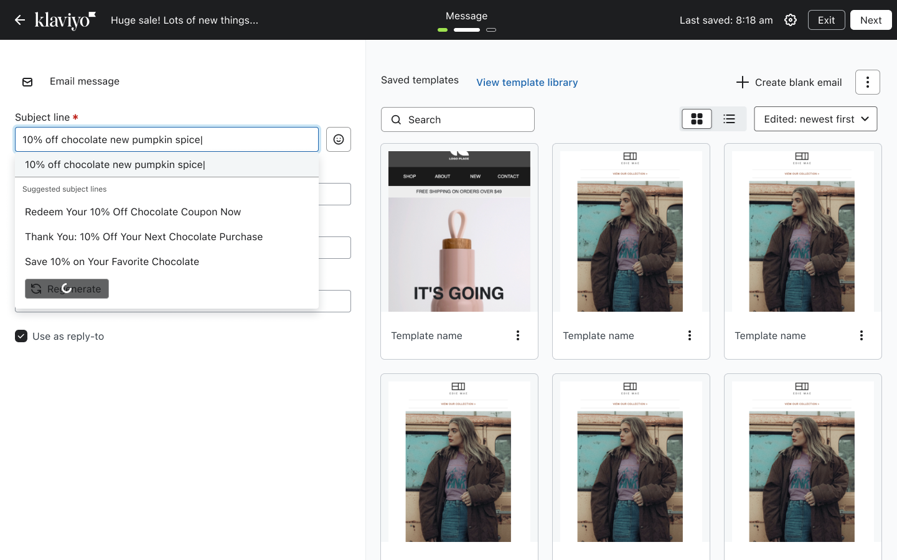
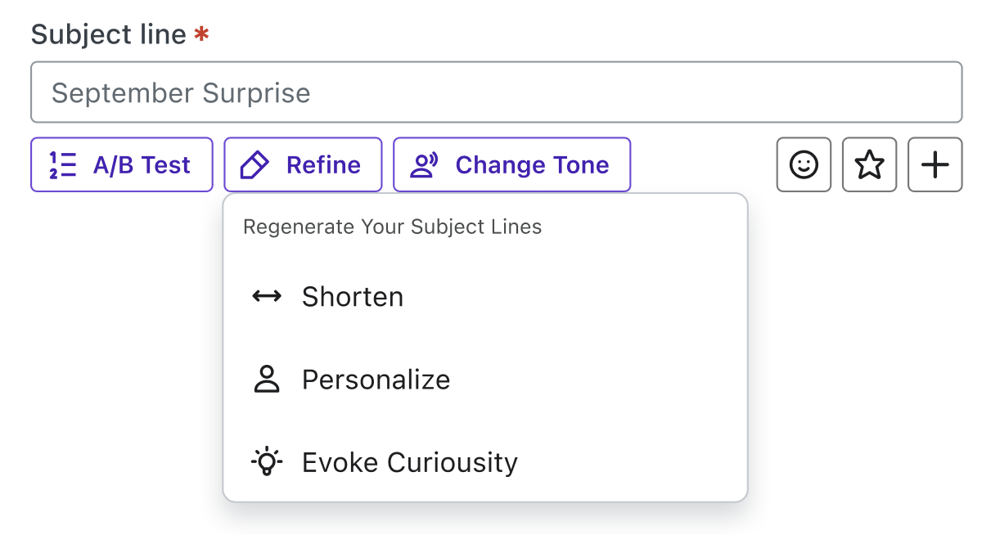
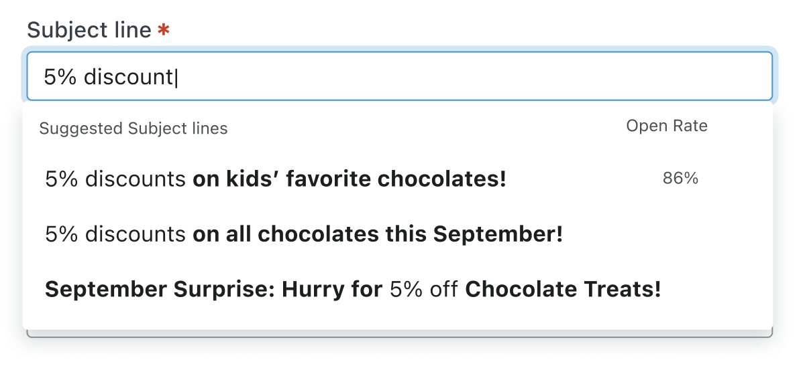
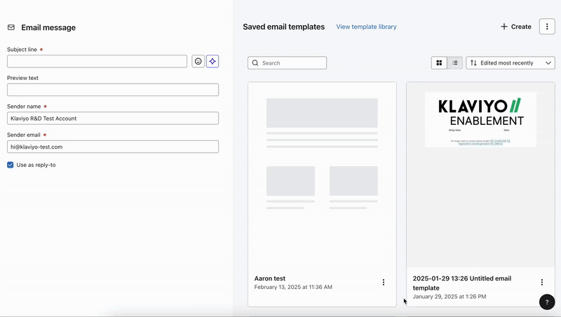
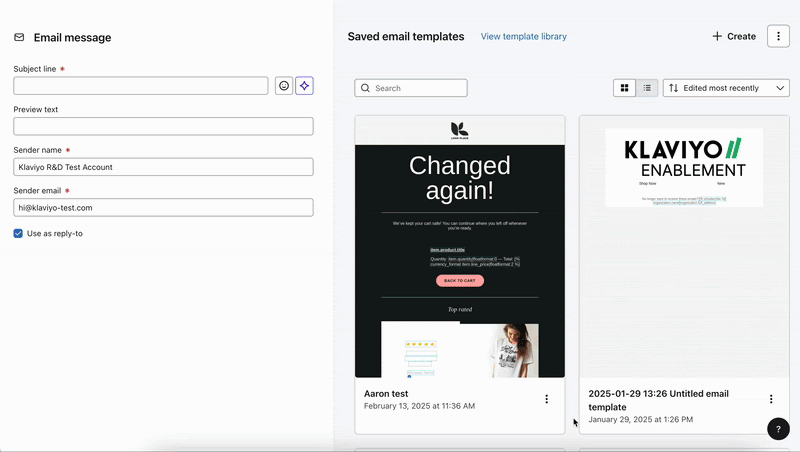
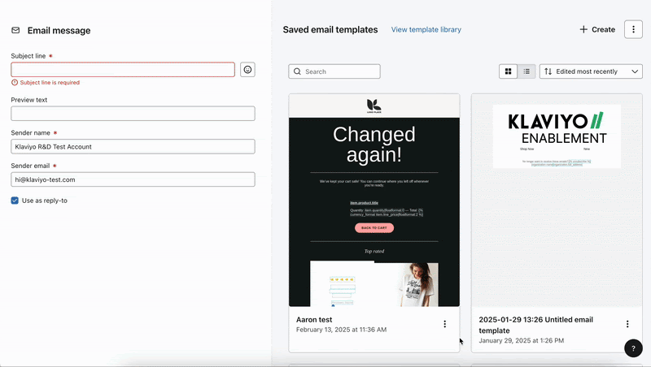

Case study · Klaviyo
Subject Line Assist
Klaviyo's AI could write brand-aligned subject lines automatically. Only 1.74% of users were using it. I redesigned the interaction model from scratch and drove an 8× increase in adoption.

Background
Great AI. Nobody using it.
Klaviyo's Subject Line Assistant used your brand's historical emails, tone, and segment data to generate personalized subject lines automatically. The AI was good. But across every customer tier — from scrappy startups to enterprise accounts — barely anyone was using it.
Average adoption: 1.74% of messages. Flat. Across all segments.
User tickets told the same story. About 5 tickets and 10 chats every month — all saying the same things:
Design thinking
The interaction model was the problem.
My goal: reduce clicks to 3 or fewer, integrate brand services, and get adoption to ~5% of messages. But before picking a direction, I explored three fundamentally different theories of how AI should enter the writing experience.



Experimentation
Three experiments. One clear winner.
I designed and shipped an A/B/C experiment across ⅓ of all Klaviyo users — free and paid — to isolate the impact of proactive vs. reactive AI and inline vs. modal interactions. Each user account was assigned to one variation so experiences stayed consistent.
Control — existing modal-based Subject Line Assistant

Variant B — reactive AI via sparkle icon

Variant C — proactive inline AI surfacing suggestions as users type

Final design
Type. See. Choose.
Variant C became the shipped experience. Proactive adaptive autocomplete — embedded directly in the subject line field, pulling from the user's last 5 emails, brand tone service, and segment attributes (lifecycle stage, product preferences). No modal. No extra clicks. The AI shows up where you already are.

Key design decisions
Impact